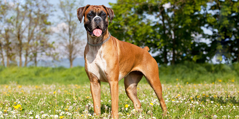

(Canis Lupus Familiaris)
El perro es uno de los animales domésticos más antiguos del mundo y el mejor amigo del hombre. Su domesticación comienza cuando apenas era un pariente salvaje de los actuales lobos (Canis lupus), existiendo pruebas arqueológicas que confirman su existencia como animal doméstico. Toda la especie se refiere a la raza doméstica (Canis lupus familiaris). El perro actualmente solamente puede vivir, de forma óptima, en sitios urbanos o en lugares que estén supervisados por el hombre, debido a que este animal no cuenta con propiedades de supervivencia o de defensa ante depredadores. El hábitat de un perro en la actualidad es en las casas donde viven sus dueños, también existe una raza de perro salvaje que habita cerca del África, tienen un color marrón con manchas negras que los distingue, este tipo de perros viven en manadas y al momento de cazar lo hacen también en manada ya que es instintivo.
1.Ser muy afectuosos con los humanos:Para todos es ampliamente conocido que el amor de los caninos por los humanos es una de las cosas más increíbles y enternecedoras que existe en el mundo, ya que estos hermosos animales permanecen fieles y leales por siempre.los perros cuentan al igual que los humanos con una hormona llamada oxitocina, la cual permite activar una serie de circuitos cerebrales que están relacionados con todo tipo de sensaciones agradables, entre las que está incluida la sensación de amar a una persona. 2.Tener un sentido del olfato muy agudo:El sentido del olfato es el más desarrollado en los perros, es hasta 10.000 veces más sensible que su sentido del gusto y mucho más agudo que su visión. Si lo comparamos con el del ser humano, nos dejan atrás por mucho. Los perros tienen entre 200 y 300 millones de receptores olfativos, frente a los cinco millones que podemos tener nosotros. 3.Tener un amplio espectro auditivo:Tienen un sentido del oído mucho más desarrollado. El espectro auditivo de los perros, es de 20 Hz hasta 65 KHz, teniendo más sensibilidad en las frecuencias entre 500 Hz y 16 KHz). 4.Ser capaces de detectar el movimiento: Los perros disponen de un pabellón móvil a modo de radar que pueden dirigir para captar la mayor cantidad de ondas de sonido. Su oído es dos veces más fino que el nuestro y pueden percibir frecuencias sonoras hasta 2,5 veces superiores a las que percibe el oído humano. 5.Vista:La visión del perro está adaptada por sus orígenes a la caza. Es por eso que su visión nocturna no es como es tan buena como la de los felinos por la noche, pero es superior a la de los humanos, siendo capaces de ver más por la noche que nosotros. Esta misma a adaptación a la caza es la que hace que su visión sea más sensible a los objetos en movimiento.